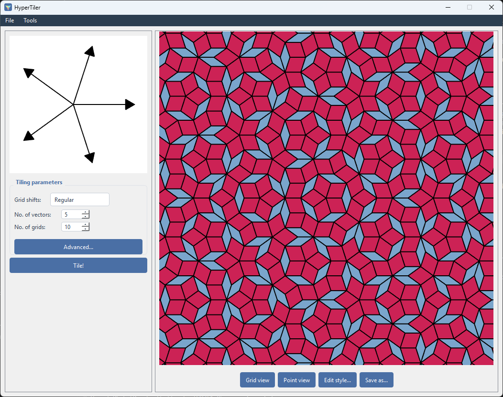
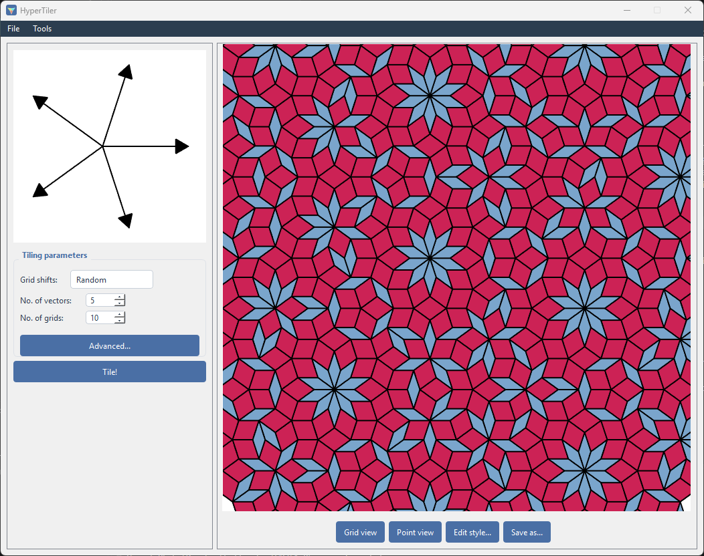
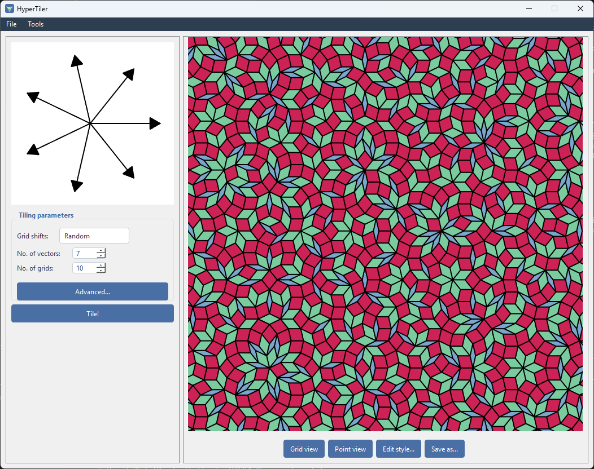
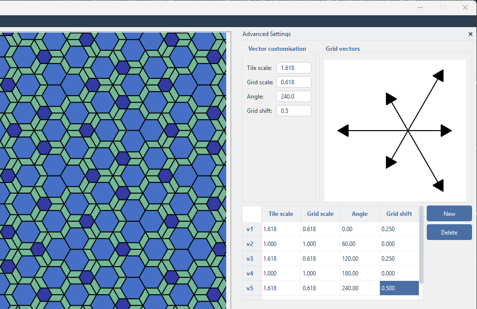

The main window
HyperTiler generates 2D tilings using two different methods, and lets you analyse the result the same way regardless of which method produced it.
This guide won’t go deep into the mathematics behind these methods - a brief guide can be found here - but assumes the reader either is familiar with them or doesn’t care how they work and just wants to make some patterns.
Layout
The window is split into a parameter panel on the left and a plot on the right, with a menu bar above both. HyperTiler starts in grid tiling mode, and you can access substitution mode through the tools menu.
Grid (multigrid) tilings
You specify a small star of vectors - for example five vectors arranged with 5-fold symmetry, the classic setup behind Penrose tilings. HyperTiler builds a family of evenly spaced parallel lines for each vector (a “grid”), finds every intersection between lines from different families, and turns each intersection into a tile in the resulting tiling. This is the de Bruijn multigrid / “dual grid” construction.

Changing the number of
vectors, how each grid is shifted, and how many lines each grid contains
changes the tiling’s symmetry, density and character. For example, the above uses Grid shifts - Regular, but if we switch to Grid shifts - Random, then we get:

Or if we add another two vectors:

Left panel - tiling parameters
Vector preview - a small plot showing the current vector star as arrows from the origin.
Grid shifts - how each grid’s lines are offset from the origin:
Regular- an evenly staggered offset that avoids degenerate multi-line crossings. The sensible default.Zero- no offset - produces a more symmetric tiling with many lines crossing at single points.Random- offsets drawn randomly.Regular random- random offsets, normalised to sum to 1.
No. of vectors - the symmetry order of the grid star (5 for a Penrose-style tiling, for example). Changing this rebuilds the vector set from scratch.
No. of grids - how many lines each grid family contains, i.e. the physical size/density of the tiling. Larger values mean more tiles and slower rendering.
Advanced… - opens the Advanced Settings dock, below.
Tile! - builds and draws the tiling from the current settings.
Advanced Settings
A dockable panel for hand-editing the raw vector data, rather than only the symmetry-order/shift shortcuts above.
A form with four spin-box fields for the selected vector:
Tile scale,Grid scale,Angle,Grid shift. Scrolling or typing into these updates a live preview of the vector plot immediately, and (after a short pause) regenerates the full tiling.A second small plot showing the “grid” (dual-space) vectors, as opposed to the real-space vectors in the main preview.
A table listing every vector as a row, with the same four fields editable in place via spin boxes.
New/Deletebuttons to add or remove individual vectors.
For example, here the tile and grid vectors have been scaled by the golden mean (tile vectors are larger, grid vectors are smaller), with shifts applied to produce the H00 tiling:

Right panel - the plot
A 700×700 interactive plot: left-drag to pan, scroll wheel to zoom. Below it:
Button |
Does |
|---|---|
Grid view |
Shows the raw multigrid lines instead of the filled tiling. |
Point view |
Shows only the tiling’s vertices as points instead of filled tiles. The button’s own label |
Edit style… |
Opens the Style Dialog for whichever view (tile / point / grid) is active |
Save as… |
Exports the current view as a PNG or SVG image (pick the format in the save dialog). |
Grid view and Point view are mutually exclusive - turning one on turns the other off. With both off, you see filled, coloured tiles. A small quality label above the buttons shows the current auto-adjusted rendering quality for large tilings (see Preferences).
Substitution (inflation) tilings
You provide a hand-drawn SVG file (made in Inkscape or any other vector-based illustrator) that shows one or more “supertiles” and how each one subdivides into smaller copies of itself and other tile types. HyperTiler starts from a single tile (or a hand-arranged patch you can also supply as an SVG) and repeatedly applies that subdivision rule - each repetition is a “generation”. This is the substitution/inflation method. See Substitution tiling for a much more detailed explanation of how to create the .svg files needed.
Design and analysis
Once you have a tiling you can:
Recolour tiles by type, and inspect individual tiles, points, or grid-line intersections
Classify vertices into distinct local “vertex types” - groups of vertices whose surrounding tiles are arranged identically
Build a neighbour network between vertices, banded into distance “shells” - useful as lattice/graph data for physics simulations
Compute a quick FFT of the point set
Export images (PNG or SVG), vertex/neighbour data, and the tiling’s own parameters for later reuse